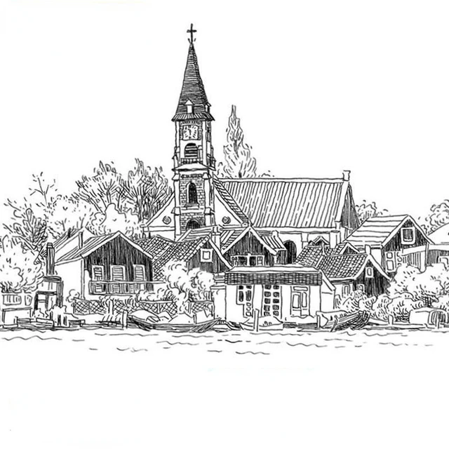

초등학생 때 부터 그림그리는걸 좋아했습니다. 친구들을 따라 웹툰을 보기 시작했는데 너무 감명깊게 봤는지 그걸 따라그리기 시작했습니다. 그리다보니 그게 취미가 되고, 그저 따라그리기만 하던게
스스로 생각해서 그리기 시작해 지금까지도 취미로 남게 되었습니다. 
예전에는 웹툰을 따라그린다고 캐릭터 그리는걸 좋아했다면, 시간이 지난 지금은 풍경 그리는 것을 좋아합니다. 저 사진은 제가 그린건 아니고 어디서 주워온건데 저렇게까지 그리진 못하지만
길 가다가 본 예쁜 풍경, 어디 놀러가서 눈에 들어왔던 예쁜 풍경 등 그런걸 주의깊게 보고 기억해두었다가 나중에 그리는걸 좋아합니다. 제가 잘 그렸다면 자신있게 이 페이지에 넣어서 자랑했을텐데
잘그리지는 못해서 너무 아쉽습니다. 풍경들을 주의깊게 관찰하고 기억해두었다 그리는 취미를 가지고있다보니, 주변을 둘러보는 관찰력이 조금 좋아진 것도 같습니다. 남들보다 숨어있는 고양이를
잘 찾게 되었습니다.